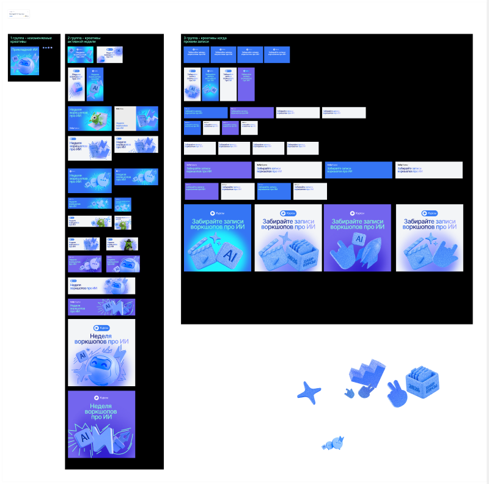
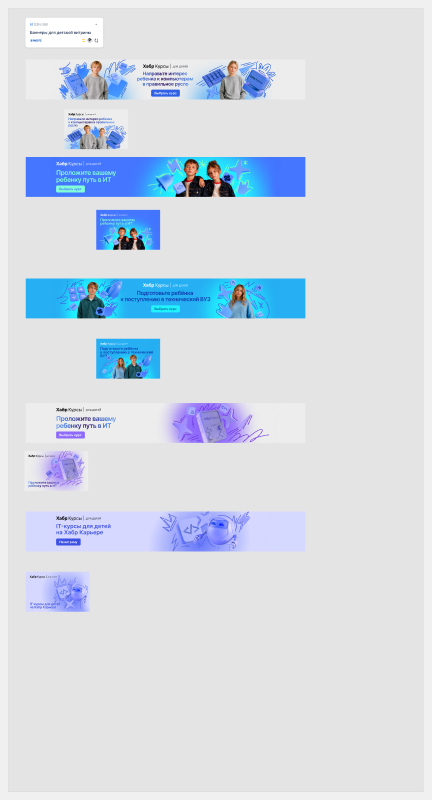
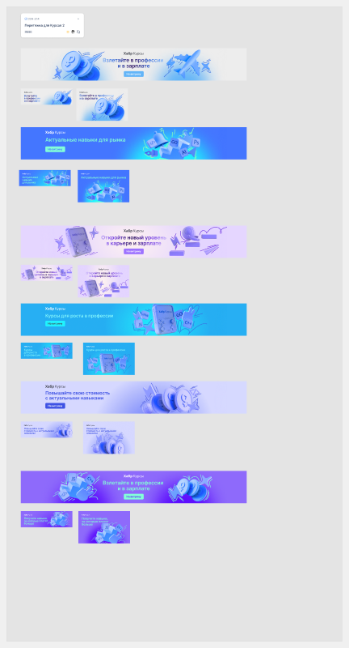

Концепция — синтез «Управляемый росчерк»
Решение владельца Р-9, закрывает вопрос Q-1. Из четырёх бренд-досок не выбрана ни одна: три из них («Неоновый БУМ», «Карьера как движение», «Карьерный путь») оказались одним техническим классом — векторный штрих с круглым капом, различающийся только шириной и заливкой. Синтез сводит их в один приём, параметр которого — уже существующий токен продукта, кислотный акцент.
без кислотного акцента — Карьера
у Карьеры ячейка пуста — кислотного нет ни при какой концепции, это правило Ц-3, а не сбой
| Параметр | Без кислотного акцента | С кислотным акцентом | Опора |
|---|---|---|---|
| Заливка | флэт-белый или многостоповый градиент | свечение цветом --product-acid, round-cap 8–9 px | career-line-b2.svg, star5-neon.svg |
| Вес дисплея | Medium | SemiBold | 13/13 заголовков бренд-досок |
| Ширина штриха | 244 px линия · 85 px лента | 8–9 px неон | три доски из четырёх |
Что вскрыла эта демонстрация. Токен --product-acid на уровне продукта равен none у Хабра и Карьеры, и только у Курсов несёт #44f91f. Зелёный Хабра включается лишь сочетанием data-product="habr" data-concept="neon-boom" — это записанное ограничение применения цвета: покрытие 23/23 описывает исследованный набор баннеров, а не доказывает, что зелёный принадлежит продукту. Значит формулировка Р-9 «параметризуется кислотным акцентом продукта» точна только вместе с концепцией: у Хабра приём включает не продукт, а пара «продукт + концепция».
Глитч-сетка четвёртой доски не вошла в обязательный приём: покрытие 1/4 на продукте с наименьшим материалом. По METHOD §8 это наблюдение, а не норматив — осталась опциональной вторичной текстурой. Развёрнуто — GUIDE.md §12.
Открыто и блокирует: какого цвета Курсы
Q-5 Продуктовая палитра Курсов в пакете снята с баннера, у которого нет лок-апа продукта вовсе. Проверено прямым обращением к Figma. Три источника тематически про курсы и расходятся по цвету радикально — до ответа владельца значения токенов не меняются.
текст #404278



Третий источник — самый объёмный, и точные значения из него не извлечены. Это честный пробел, а не забытая работа: измерять их осмысленно только после того, как владелец назовёт канонический источник.
Закрытые вопросы
| Вопрос | Ответ | Что из этого следует |
|---|---|---|
| Q-1 Какая из четырёх концепций рабочая | Ни одна — нужен синтез | Решение Р-9, раздел выше |
| Q-3 Есть ли веб-форматы в 04_Brand | Нет. 23 из 23 — пост 1080 × 1350 | Перенос нового стиля на лендинг — проектная работа, не снятие |
| Q-4 Опорная ширина продукта | 1440 | Не самая частая (1600 — 8 из 18), но совпадает с типовым брейкпоинтом |
| Q-2 Добирать ли материал по Курсам | Частично: три доски 01_Social досняты | Точные значения ждут ответа на Q-5 |
Дефекты, которые нашёл конвейер
Шесть шагов прошли ревью задним числом. Пять ревью из шести нашли по существу. Общее у находок одно: ни одна не была видна на витрине — каждая пряталась там, куда витрина не смотрит.
| Что было сломано | Почему не видно глазом | Шаг |
|---|---|---|
| Кольцо фокуса, заливка кнопки, чекбокс и радио пропадали целиком на странице без data-product | В витрине data-product выставлен всегда. Ломалась ровно копируемость — главное обещание пакета | R0-08 |
| ALS Hauss стоял рабочей гарнитурой вопреки решению Р-3, без @font-face и без файла | Шрифт установлен в системе автора. У читателя без него меню шапки молча уезжало в Inter | R0-03 |
| Свечение карточки красило все три продукта синим цветом одного проекта | Смотришь на один продукт — расхождения не видно. Восьмая протечка слоя подряд | R0-02 |
| Палитра Курсов снята с баннера без лок-апа | Цвета выглядят убедительно сами по себе; проверяется только обращением к источнику | R0-04 |
| Протокол досъёмки занижал собственный пробел втрое | Числа доказательности не видны нигде, кроме самого протокола | R0-00 |
| Горизонтальное переполнение на 768 в футере | Литерал 110 px вне списка переноса при колонке 332 px | R0-03 |
Чего пакет не знает
Семнадцать границ покрытия названы числом и адресом закрытия — полный список в evidence/coverage.md. Здесь те, что меняют способ пользоваться пакетом.
| Граница | Число |
|---|---|
| CSS снят сплошь, одним вызовом на узел | 2 из 18 — точечно у 18 из 18 |
| Пар «одна страница в двух темах» | 0 из 22 — светлая тема целиком норматив |
| Состояния в источнике | 0 наблюдений — 8 из 20 спроектированы |
| Веб-форматы в новом брендовом стиле | 0 из 23 |
| Собственные переменные Figma | 0 — чужих 11, из ДС Хабра |
| Мобильные раскладки | не установлено — прежнее «0 из 18» ничем не измерялось |
| Баннеров по Курсам в 04_Brand | 1 против 11 у Карьеры и 10 у Хабра |
| Tone of voice в источниках | 0 строк — пакет о тоне не высказывается |